Die nächste Show kommt...
Erlebe unvergessliche Momente voller Spontanität und Humor
Samstag, 31. Januar 2026
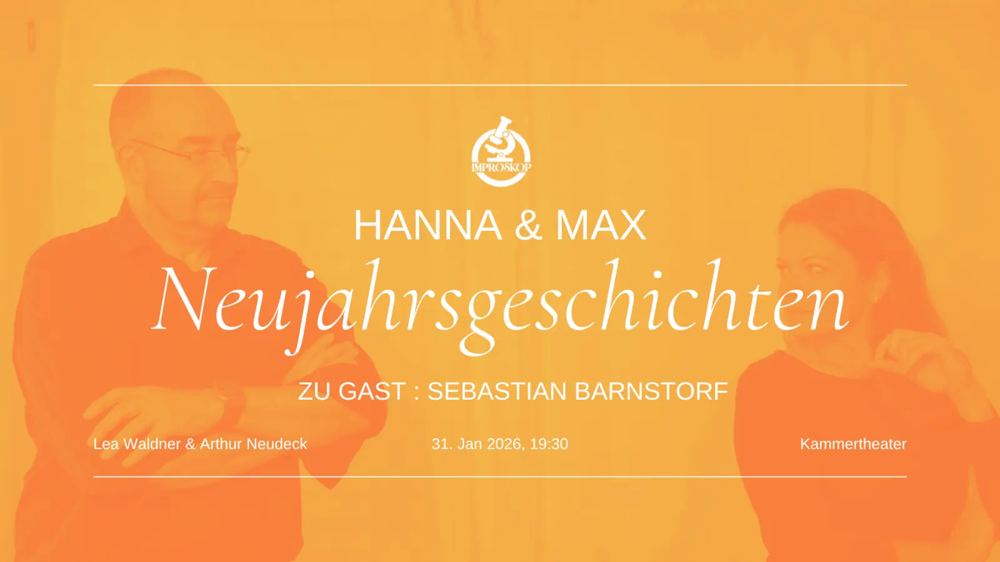
Die nächste Show kommt...
Erlebe unvergessliche Momente voller Spontanität und Humor
Samstag, 31. Januar 2026
DER GAST
Sebastian Barnstorf
DIE MUSIKALISCHE BEGLEITUNG
Andreas Bohl
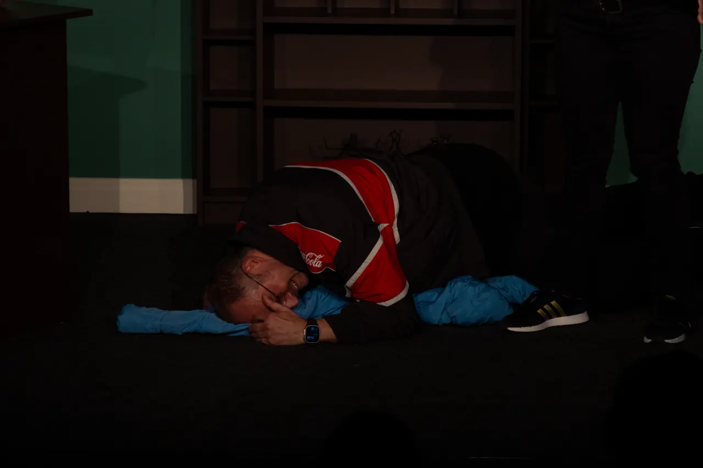
Letzte Aufführung
Zu Besuch bei Hanna & | 25. Oktober 2025, Showstart: 19.30 Uhr
Nach ihren gefeierten Auftritten kehren Hanna Lea Waldner und Max Arthur Neudeck auf die Bühne des Kammertheaters zurück – dieses Mal in mit neuem Format, neuen Ideen – und neuer Konstellation: Gemeinsam mit dem Gast Matthias Baumann entsteht ein Abend, an dem nichts vorher feststeht und doch alles möglich ist.
Doch auch für die musikalische untermalung ist gesorgt: Barbara Lenz begleitet besagtes Geschehen live am Klavier. Die professionelle Pianistin verleiht mit ihren Improvisationen dem gesagten eine Kraft, welche die Emotionen unmittelbar hörbar macht.
Im Zusammenspiel der drei entsteht eine eigene Welt: überraschend, humorvoll, manchmal berührend – und immer einzigartig. Jede Szene lebt nur in genau dem Moment in dem sie entsteht, getragen von einer Spielfreude, die spielerisch leicht, höchst amüsant und präzise geerdet sein kann.
Das Publikum darf lachen, staunen, vielleicht auch den Atem anhalten – und wird vor allem erleben, wie Theater entstehen kann, wenn man ihm den Raum für echtes Risiko gibt.
Was bedeutet dieser Auftritt für Hanna und Max? Und ist diese Frage überhaupt wichtig, solange ein Abend entsteht, den man so nur einmal erleben kann?
IMPROSKOP – der Verein
Gegründet im Jahr 2023 von Arthur Neudeck, ist unser Verein aus dem Wunsch entstanden, die kulturelle Landschaft in und um Riehen mit der Lebendigkeit der Improvisations-Kunst zu bereichern. Wir verstehen Improvisation aber nicht nur als Kunstform, sondern als Einladung – an alle Menschen, unabhängig von Alter oder Erfahrung –, gemeinsam zu kreieren, zu staunen und sich vom Moment tragen zu lassen.
Wir glauben daran, dass ein Funke Spontaneität selbst den grausten Alltag erhellen kann. Deshalb leben wir die Werte, die Improtheater ausmachen: Offenheit, Kreativität, gegenseitige Wertschätzung und den Mut, einfach loszulassen und Neues zu wagen.
Unser Verein ist ein Raum des Entdeckens – ein Ort, an dem Lachen und Geschichten entstehen, an dem Menschen zusammenkommen und das Unerwartete gefeiert wird.
Ob als Teilnehmer:in unserer Workshops, als Zuschauer:in unserer Aufführungen oder als Teil unserer wachsenden Gemeinschaft – jede und jeder ist eingeladen, die Magie des Improvisierens zu erleben und mit uns gemeinsam weiterzuspinnen.
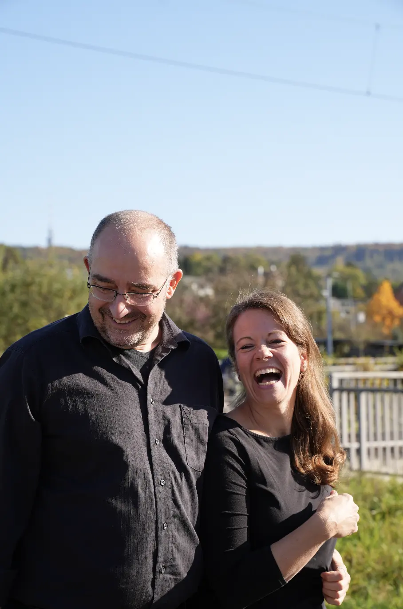
DIE SCHAUSPIELENDEN
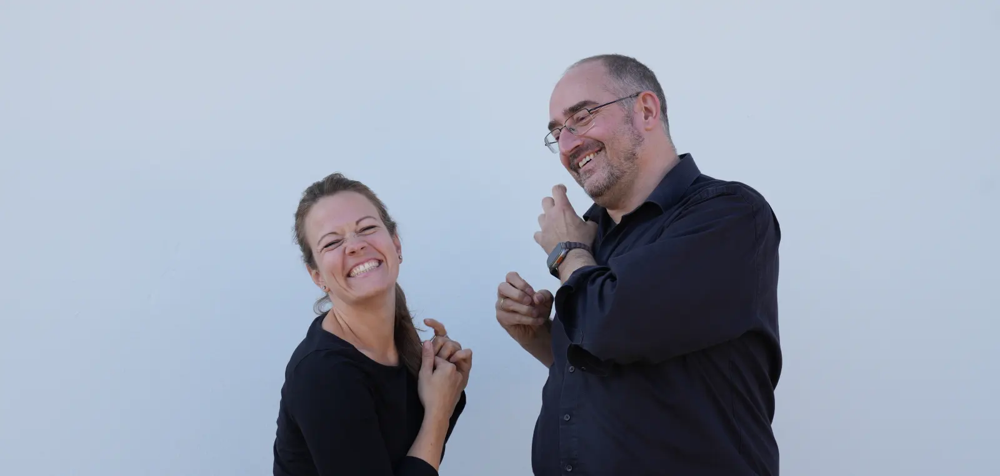
Arthur Neudeck – Schauspieler & Vereinsgründer
Arthur, geboren und aufgewachsen in Freiburg (mit dunklen Umwegen über den Schwarzwald), war ein Spätzünder: 1998 entdeckte er dort zum ersten Mal das Theater. Doch erst 2016 traute er sich, diese ungewöhnliche „Liebe" zuzulassen und zu vertiefen. In verschiedenen Gruppen sowie auf zahlreichen deutschen und internationalen Workshops und Festivals lernte er immer mehr Facetten kennen.
2019 fasste er den Entschluss, eigene Wege zu gehen und neue Formate (mit) zu entwickeln. 2023 gründete er gemeinsam mit Lea den Verein „improskop" sowie das Format „Hanna & Max" – ein Duo, das immer zu dritt spielt.
Seither gibt er Workshops für die unterschiedlichsten Zielgruppen: Kinder, Jugendliche und Erwachsene. Dabei entstanden Abschlussvideos, Schulveranstaltungen und Business-Theater.
Für Arthur steht heute fest: „Embrace failure, let him/her shine, be in the moment – das sind die Grundlagen eines glücklichen Lebens!"
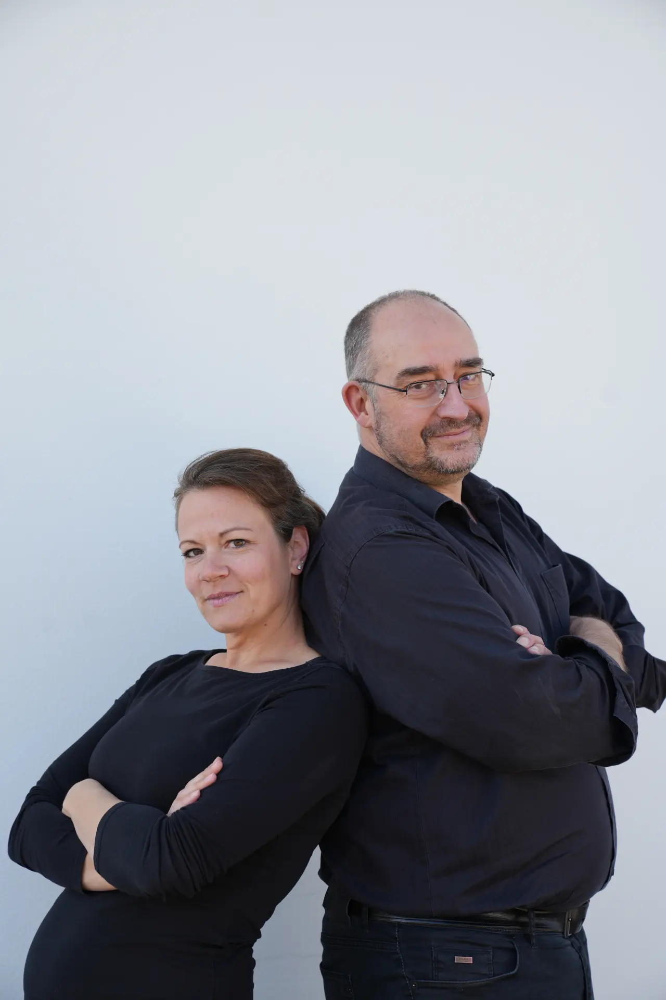
Lea Waldner – Schauspielerin
Lea Waldner, geboren und aufgewachsen in Frauenfeld im Thurgau, steht sie seit 1992 auf den Brettern, die die Welt bedeuten. Von klassischen Theaterproduktionen auf kleinen und großen Bühnen bis hin zu ausgefallenen Projekten hat sie schon Vieles gespielt, was Herz, Kopf und Publikum bewegt.
2015 entdeckte sie in Basel das Improtheater – und damit eine neue Leidenschaft: Spontanität auf der Bühne! Seither besucht sie Kurse und Workshops, spielte schon in diversen Formationen und Formaten und bringt das Publikum regelmäßig zum Lachen, Staunen oder Nachdenken.
Mit der Zeit schlich sich die Impro auch in ihren Berufsalltag und heute nutzt sie Improelemente nicht nur auf der Bühne, sondern auch im echten Leben.
Ihr Motto: „Das Leben hat kein Skript – also improvisieren wir!"
RÜCKBLICKE
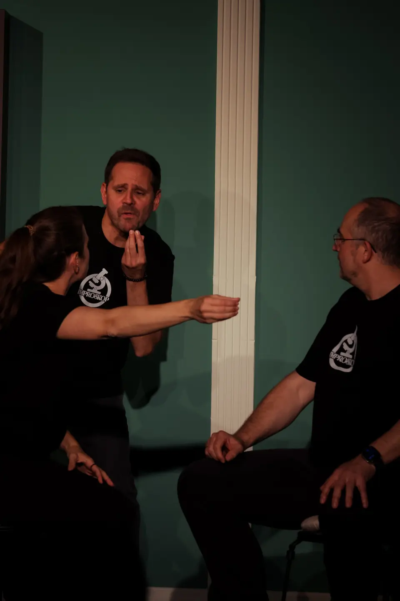
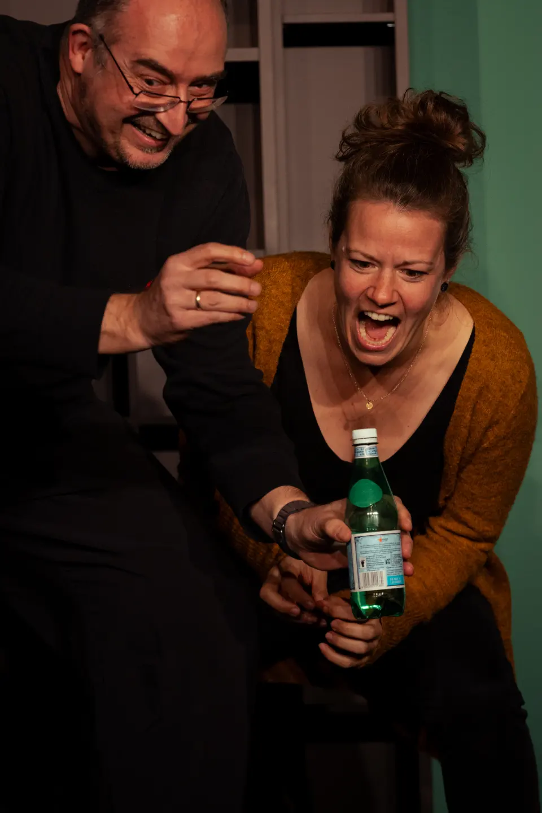
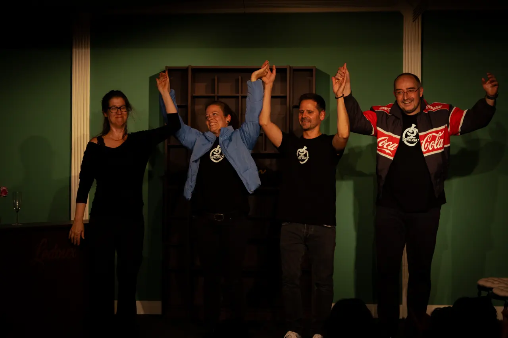
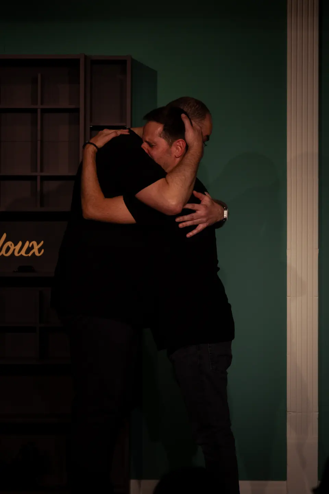
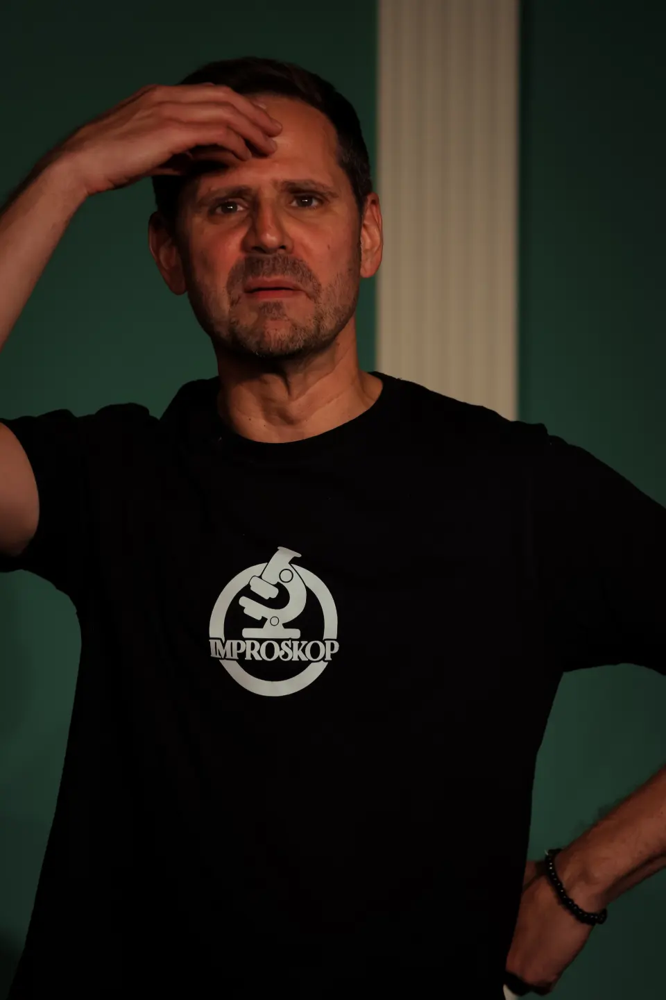
DIE ORGA
Mika Neudeck – Webdesigner & Entwickler
Der 16-jähriger Gymnasiast aus Riehen hat schon seit Kindesalter eine beeindruckendes Talent für Technik und Design. Was ursprünglich als einfaches Schulprojekt begann, entwickelte sich schnell zu einer professionellen Website welche er eigenhändig für den Verein Improskop aufsetzte.
Trotz seines jungen Alters bringt Mika ein ausgeprägtes Gespür für Gestaltung, Benutzerfreundlichkeit und Struktur mit. Er kombiniert technisches Wissen mit einem klaren ästhetischen Verständnis und sorgt so dafür, dass Inhalte nicht nur funktionieren, sondern auch ansprechend präsentiert werden.
Mit Eigeninitiative, Lernfreude und Präzision hat er sich in kurzer Zeit ein breites Wissen in Webentwicklung und Design angeeignet – und zeigt damit, dass Talent und Professionalität keine Frage des Alters sind.
Malte Mickisch – Betriebskoordination & Gästebetreuung
Malte sorgt dafür, dass an den Events selbst alles reibungslos abläuft – sowohl vor als auch hinter den Kulissen. Ob an der Bar, beim Aufbau oder in der Koordination des Teams: Er behält den Überblick, erkennt, wo Hilfe gebraucht wird, und sorgt dafür, dass jede Veranstaltung rundum gelingt.
Mit einem ausgeprägten Organisationstalent, Ruhe in stressigen Momenten und einem offenen Ohr für Gäste und Teammitglieder ist Malte die verlässliche Stütze im Hintergrund. Durch seine strukturierte Arbeitsweise und seinen Sinn für praktische Lösungen trägt er entscheidend dazu bei, dass das Publikum einen unvergesslichen Abend erlebt.
Kim Neudeck – Organisation & Marketing
Kim ist die treibende Kraft hinter der Planung und Durchführung der Improskop -Events. Sie behält stets den Überblick über Projekte, Termine und Abläufe und sorgt dafür, dass alles – oder zumindest fast alles – reibungslos funktioniert. Neben ihrer organisatorischen Stärke verantwortet sie Marketing und Kommunikation und trifft dabei zahlreiche kreative Entscheidungen, die das Event erst möglich machen.
Mit ihrer strukturierten Arbeitsweise, ihrem Engagement, einer klaren Vision und einem feinen Gespür für Ästhetik und Wirkung bringt Kim Ordnung, Dynamik und Tatendrang zugleich ins Team. Sie versteht es, Ideen in konkrete Konzepte zu verwandeln und den Überblick zu behalten, selbst wenn es turbulent wird.
Q&A
Was für Tickets gibt es und wie viel kosten diese?
Wir bieten normale Tickets für 25 CHF und Schüler*innen/AHV,IV-Tickets für 15 CHF an.
Mit einem VIP-Platz sitzt du ganz vorne, siehst jedes Lächeln und jede spontane Reaktion hautnah – quasi mitten im Geschehen. Ausserdem unterstüzt ihr uns damit sehr
Wo finden die Aufführungen statt?
Die Shows finden im Kammerthater Riehen statt.
Wie kann ich Tickets reservieren?
Tickets können über den Link dieser Website zu Eventfrog organisiert werden.
Wie kann ich die Impro-Gruppe kontaktieren?
Schreibe uns einfach eine E-Mail!
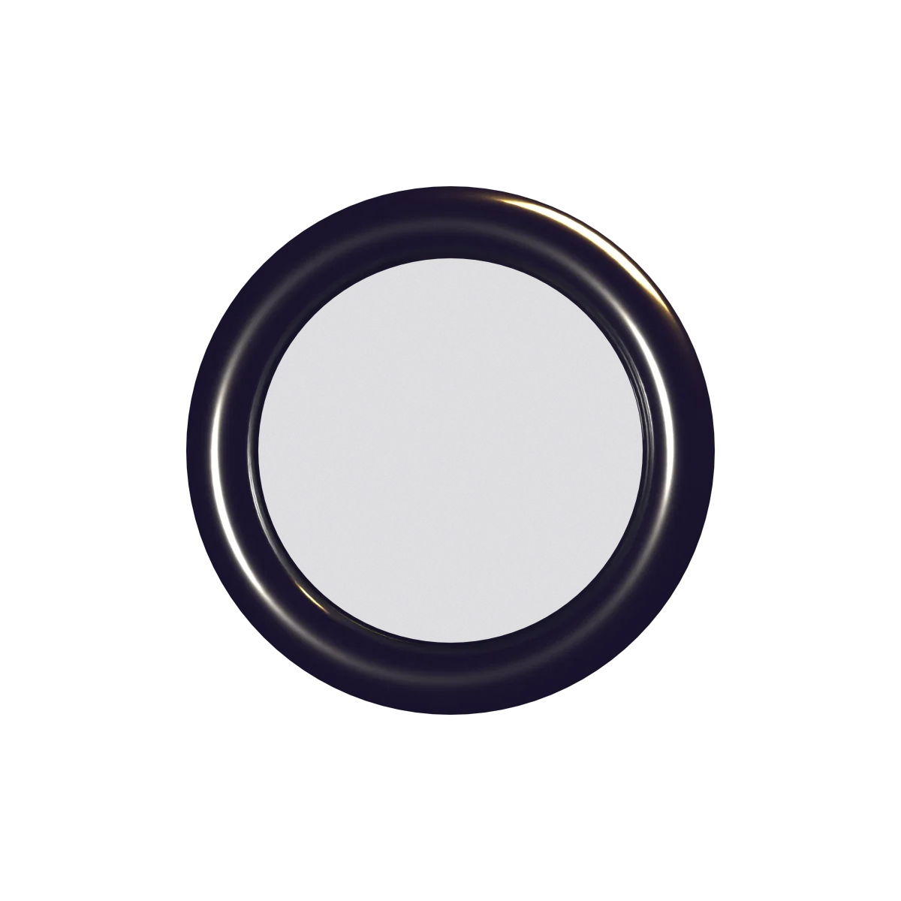